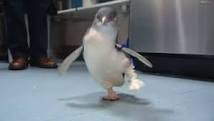
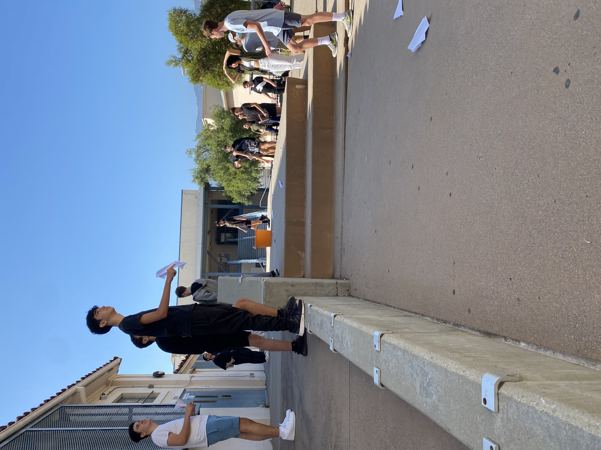
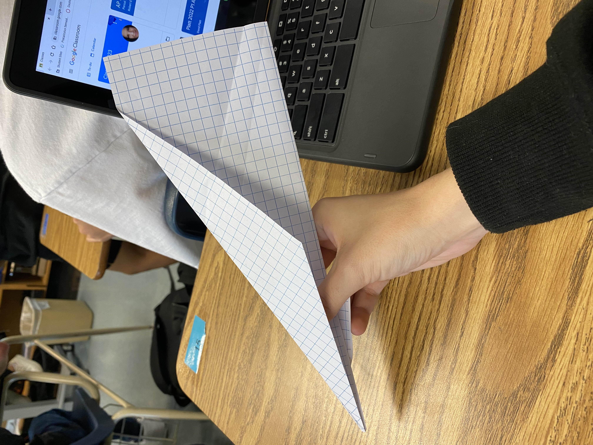

This is my Week Two Blog
This week in class we spent a lot of time going over how to work AWS. With working on Aws, we learned all of the html commands that are needed to be able to push to this other website called github. On github, we will be able to see our websites come to life! We get a small preview already on AWS but to see it all on github is really very fascinating. I think that it is super amazing how we can add pictures and videos which gives our websites more dimension. I also got to really meet my table mates and make good connections with them.
This is my Week Three Blog:
This week in class, we learned a lot of new things about this website called tinker cad. I learned that on tinker cad, I can create my designs in 3-d! Today in class, we did a challenge on tinker cad to see who could make the best design of an object from their home. For my design, I chose to do an Altoids can. For this altoids can, I attempted to draw my own design for the shape but when that had wonky edges, I used squares and half cylinders to fix wherever necessary. Below this paragraph, I'm going to add pictures of my work and the actual Altoid can that I drew inspiration from :p. We as well worked on our challenge project in which the goal is to use three Rube Goldberg designs to create something that will pop balloon with a needle. For my design, I have choen to use the lever, the inclined plane, and the pulley. For this vision, I suggested that a pulley lower down something heavy on to the lever in order for the lever to toss the baseball up. After it is tossed, it will fall back down an roll down the inclined plane where it will hit a suspended needle that is hanging down from a cardboard stand in which after it is hit, will hit the balloon. Today, we are getting in groups to show all of our project ideas and we will decide who's will work best!


This is my Week Four Blog
This week in class, we finally got to agree upon in our groups which idea was the best for the project and get on with it. We started to build and with my group, things went relatively smoothly with starting to build Aaron's rendition of how the project should work. We started right on board with how to project was originally built and then strayed off to make some things work better and more accurately for the real life building. For example, we changed the shape of some of the bases for the machine from cylinders to rectangles. We even had disagreements in our group about whether or not we should have a platform, make rails, etc. All these arguments and trying and failing led to us finishing the project by Monday in class. I believe that we are ready to present, but we might fail the first time as I myself still have doubts about how straight the car will travel. We will see on Wednesday if the project will work!
This is my Week Five Blog
In class this week, we were finally able to test our projects. This was super exciting for my group because we really thought we would get it on the first try. Sadly, when we walked into class on Monday, our project had been found slightly bent out of shape because someone in a previous class had stepped on it. On the bright side, it was an easy fix and we made it even better and more durable that same day. We were even able to test our project out and it worked! It took us four separate tries but we finally got it to work and it was very exciting. What we did to get it to work was tape the balloon down into place and also make a platform for our car to project itself off of when it was hit by the baseball. Below this paragraoh, there will be a video in which you can see our final attempt to hit and pop the balloon which worked!
This is my Week Six Blog
This week in class we started a new project. This project tasked me and my partner Greg to take apart a laptop and piece it back together. Now in this project, we struggled a lot with getting all of the parts out and then as well remembering where all of the screws went. We even sadly lost a shift key whilst trying to take out the keyboard. I sadly also did not make it to class on the second day of the project and Greg had to finish it himself in order to get the laptop put back together, but he told me everything that was done to put it back together an showed me the worksheet with all the parts of the laptop colored in. We as well had to color in an image of all of the parts in the computer and be able to identify them. This part was extremely easily (luckily) and I was able to feel like I could show where on the computer where each part was specifically.
This is my Week Seven Blog
This week in class, we learned about bioengineering. Bioengineering puts together the components of biology and engineering, just as like it is implied in the name, and people in this field do many of things with anatomy. They make things such as prostethic limbs. These limbs, believe it or not, are made for not just people but animals as well. We were tasked with creating a prostethic limb for an animal in the wild of our choice and for my project I chose a penguin foot. For my foot, I made it out of titaium and as well plastic. These two parts would be able to hold up the weight of the penguin and as well withstand the 20 year lifespan of a typical penguin living in the arctic. Besides making our own prosthetics in tinkercad, we also learned about how bioengineers study the parts of animals that make thme great and useful to replicate for scientific purposes. For Example, we saw that some bioengineers recreated the feet and grips of geckos that allow them to climb tough surfaces to make a robotic gecko that would be able to climb the rough surfaces of Mars. I thought that this was extremely fascinating and that the idea was so unique and creative. Putting aside what we learned of bioengineering, we also did the Sandwhich challenge. For this challenge, we had to articulate instructures on how to make a pb&j sandwhich for another person to follow. This project showed how important being detailled and missing no steps is because in coding, if some instructions are missing, the code will not work and can easily be done wrong. Overall, this week was really enriching.
This is Lucas, the penguin from which I drew my inspiration.
This is my Week Eight Blog
This week in class, we learned about aerospace engineering. This field is something that I am particularly interested in and so I was very excited that this was the topic for the week. We learned about how the aerospace engineers created designs for things such as the ISS and even SpaceX projects to launch rockets into space. We watched a really cool video about the ISS and how the people who currently reside on it cut their hair. Along with our new knowledge of aerospace engineering, the class was now tasked with making a bottle rocket/plane that is meant to go as far as possible horizontally. This is different because normally bottle rockets are projected upwards so now there are a number of new questions that need to be asked about parachutes and how the rocket or plane will land smoothly. We as well for this project have to create a BOM which is essentially a list of materials describing how much you need of said item, what it is going to be used for, and a description of it. We finish this project next week but this week we were also tasked with creating a "flyng paper" that will fly from the second floor into or as close to a bin as possible for this weeks challenge. I made a paper airplane to the best of my ability but I sadly did not make it that far. Some people even just made paper balls and chucked them because that was not off limits and they did end up going pretty far. Overall, this week's highlight was learning about aerospace engineering and the ISS is a new interest of mine.
 This is my Week Nine Blog
This week in class, we worked on a bottle rocket project and launched it. With this bottle rocket, my group was Greg, Aaron and Yenah. We decided that Greg's design for the rocket was the best one because it seemed the most aerodynamic. For the rocket, we had used only one soda bottle and then cardboard for the fins as well as card stock for the nose cone. We used hot glue to put on and attach the fins and tape to attach the nose cone. We had thought initially that our rocket would have no issues but sadly when it was launched, it ended up just going in a small circle and then falling into the ground. We believe that it might have something to do with either the angle that it was launched, how much water was in it, or a design flaw with how our wings were put on. Overall, it was a really fun project that I enjoyed doing and I feel as if we could definitely fix the flaws and make the rocket go further if given a second chance.
This is my Week Ten Blog
This week in class, we learned all about environmental engineering. With this knowledge, we did a project in which we were paired in random groups and were tasked with making a filter. In said filter, we got a bottle with holes in the bottom that we were supposed to fill with big rocks, small rocks, cotton, and sand. We decided that the best way to structure the bottle and pass water through it would be cotton on the bottom, sand above that, small rocks on top of that, and big rocks on the very top. This is because the big rocks would do the least filtration so they needed to be on top and the cotton was the one that would do the most filtration so we put that on the bottom right before the water would drain out. We decided to drain our water through twice and it came out the first time still relatively dirty but much better the second time around. If we were to do it a third or even fourth time, the water probably would have been even cleaner. As well, this week we did a fun halloween themed challenge with candy corn. For this challenge, we were given ten candy corn and a sheet of paper and we had to guess by doing some math how many candy corn it would take to fill up the page. For the math, my group placed as many candy corn sideways on the sheet as we could and then placed as many on the short side of the paper that we could to se how mnay rows we could fill going long ways and we ended up with 228 candy corn. We ended up winning the challenged because we got the closest number to the real number. Overall, I learned a lot about environmental engineering and I had a lot of fun with all of these projects.